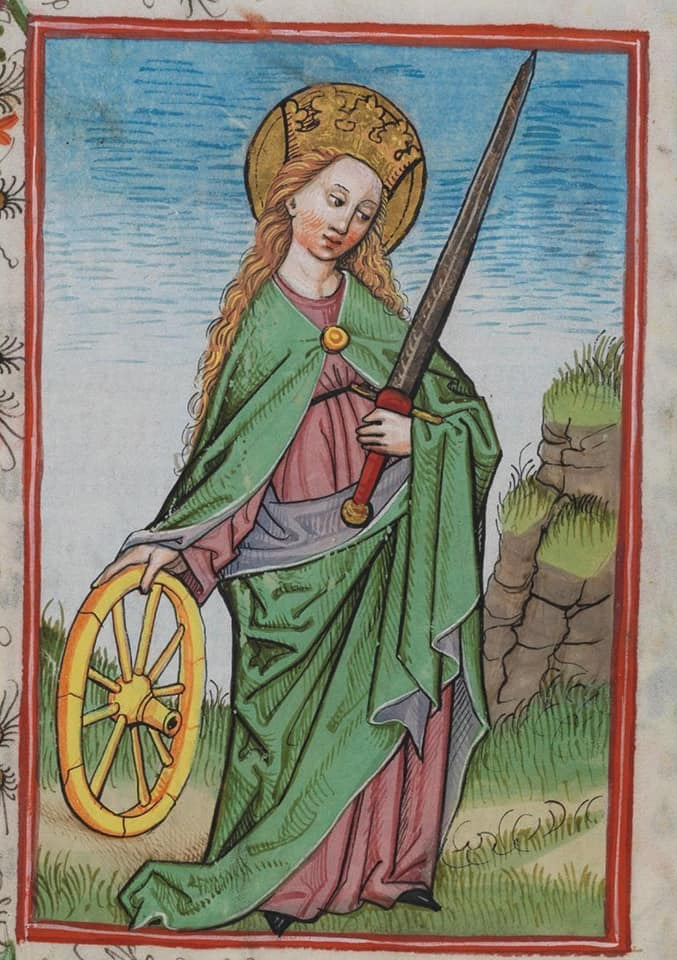
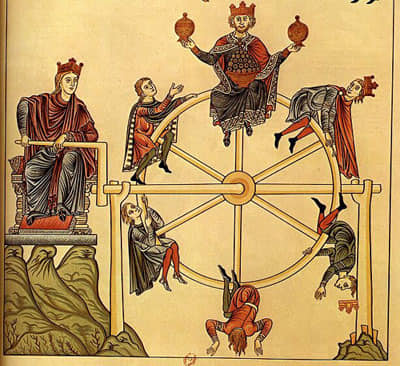
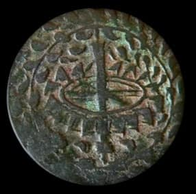

A boa arte quer normalmente dizer muitas coisas. Costuma expressar-se por camadas, que acrescentam dimensão semântica ao objecto artístico. Decomposto na cumulação de significantes, pode esse objecto ser reconduzido a várias ideias, que se entrecruzam e metamorfizam, para criar uma nova. Costuma ser essa a génese de qualquer significação. O rodízio de D. Afonso V, emblema adoptado pelo monarca a seguir à morte de D. Isabel, no qual se vêem lágrimas aspergidas, não é mais do que a constatação da mártir paixão do rei - a tortura da roda de Santa Catarina, que desfazia os corpos dos que a ela se sujeitavam. Essa tortura foi uma jogada de azar, na roda da fortuna, que comanda a vida do determinismo Cristão. Doravante não deixaria D. Afonso V de a girar com sucesso, quase até ao final do seu reinado. E da sua vida.